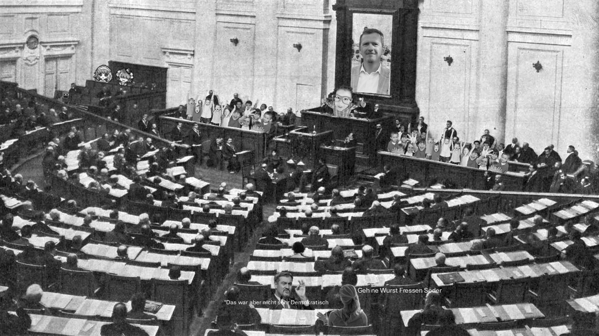

Dieses Jahr sah sich unsere Schule erneut mit dem unvermeidlichen Wechsel des Amtes der Schülersprecherinnen und Schülersprecher konfrontiert.Drei der fünf bisherigen Mandatsträgerinnen und Mandatsträger werden mit dem Erreichen des Akademischen Endspurtes der zwölften Klasse ihre Posten niederlegen und die Schule verlassen - ein natürlicher, beinahe zyklischer Prozess der schulischen Selbstverwaltung. Doch was sich in den Tagen vor der anstehenden Neuwahl ereignete, verdient nähere Betrachtung - nicht, weil es spektakulär wäre, sondern weil es, leise und unbedacht, den Kern dessen berührt, was wir unter Demokratie zu verstehen glauben.
Die SMV-AG unternahm, wie es Tradition geworden ist, einen Ausflug nach Hasel Dort, fern vom alltäglichen Trubel des Schulbetriebs, verbrachten die Teilnehmenden zwei Tage damit, sich ausschließlich mit Themen der Schülervertretung zu befassen: Strukturen, Projekte, Zuständigkeiten, zukünftige Vorhaben. Es war eine Art Arbeitsklausur, ein Forum intensiver Diskussionen und organisatorischer Überlegungen. Inmitten dieser dichten Atmosphäre der Planung und Entscheidungsfindung reifte schließlich der spontane Beschluss bei den Schülersprechern, noch vor Ort sogenannte Vorwahlen abzuhalten. Zu viele Kandidatinnen und Kandidaten, so hieß es, verlangten nach Ordnung, nach Vorauswahl. Man beschloss also, im kleinen Kreis über jene zu entscheiden, die später vor der gesamten Schülerschaft stehen sollten – ein Beschluss, gefasst ohne Ankündigung, ohne Einladung, ohne Transparenz. Nur wer zufällig dort war, durfte Stimme oder Kandidatur erheben; alle anderen blieben stumm – nicht durch Willen, sondern durch Abwesenheit.
Was hier geschah, mag im Eifer organisatorischer Vernunft wurzeln, doch es steht im schneidenden Widerspruch zu jenen demokratischen Grundsätzen, die das Rückgrat unserer politischen Ordnung bilden. Artikel 38 Absatz 1 des Grundgesetzes schreibt sie uns ein wie moralische Axiome: Wahlen müssen „allgemein, unmittelbar, frei, gleich und geheim“ sein. Diese fünf Worte, scheinbar schlicht, tragen den gesamten Geist der Volkssouveränität in sich. Werden sie verletzt, verliert jede Wahl – sei sie für das höchste Parlament oder den kleinsten Schülerposten – ihre Legitimität.
Die Spontanentscheidung in Hasel verstieß, wenn man sie juristisch und moralisch gleichermaßen betrachtet, gegen mehrere dieser Prinzipien: Sie war nicht allgemein, weil nicht alle Wahlberechtigten informiert oder anwesend waren; sie war nicht gleich, weil nur die Zufälligkeit der Teilnahme entschied, wessen Stimme Gewicht hatte; sie war nicht frei, weil der Akt der Entscheidung unter Zeitdruck und Gruppendynamik stand, ohne Raum für Reflexion oder Vorbereitung. Damit berührt sie den Kern dessen, was das Demokratieprinzip des Artikels 20 Absatz 2 GG fordert – dass alle Macht vom Volke ausgeht, also von der Gesamtheit der Betroffenen, nicht von einem Kreis Auserwählter, die sich zufällig am richtigen Ort befanden.
Vielleicht mag man einwenden, es handle sich hier nur um eine Schülerwahl, nicht um einen Staatsakt. Doch eben darin liegt die eigentliche Bedeutung des Geschehens: Die Schule ist kein unpolitischer Raum, sondern ein Abbild der Gesellschaft im Kleinen. Wenn dort Demokratie zu einem bloßen Verfahren verkommt, wenn Spontanität den Platz der Sorgfalt einnimmt, dann lernt man nicht, zu wählen, sondern sich fügen.
Demokratie ist kein Reflex, sie ist eine Übung – eine tägliche Disziplin der Offenheit, der Gleichberechtigung, der Geduld. Sie verlangt, dass jede Stimme gehört werden kann, nicht nur, dass einige Stimmen lauter klingen. Und so bleibt nach Hasel weniger die Erinnerung an einen Ausflug, als vielmehr eine leise Mahnung: Wer die Prinzipien der Wahl leichtfertig beugt, beugt auf Dauer auch den Sinn der Freiheit selbst.
Autor: Patrick von Guaita
